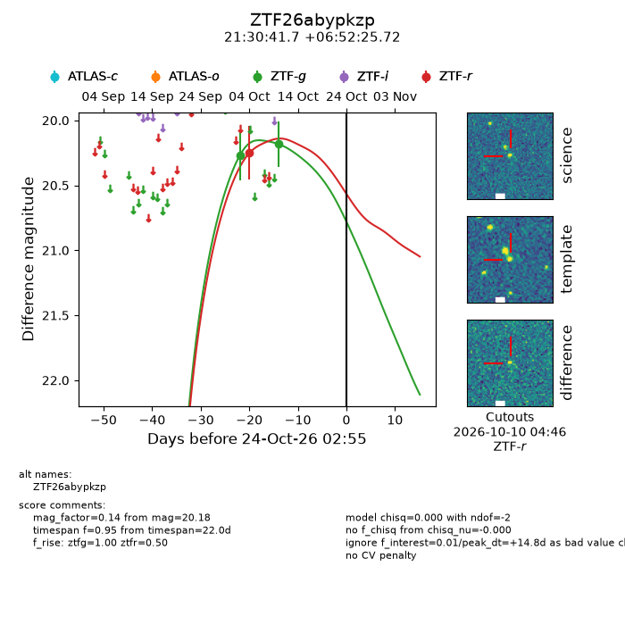
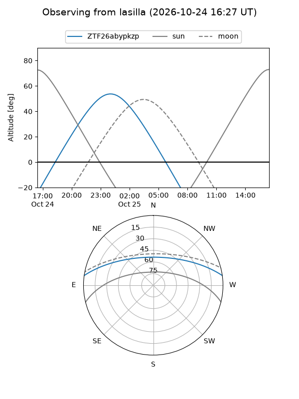
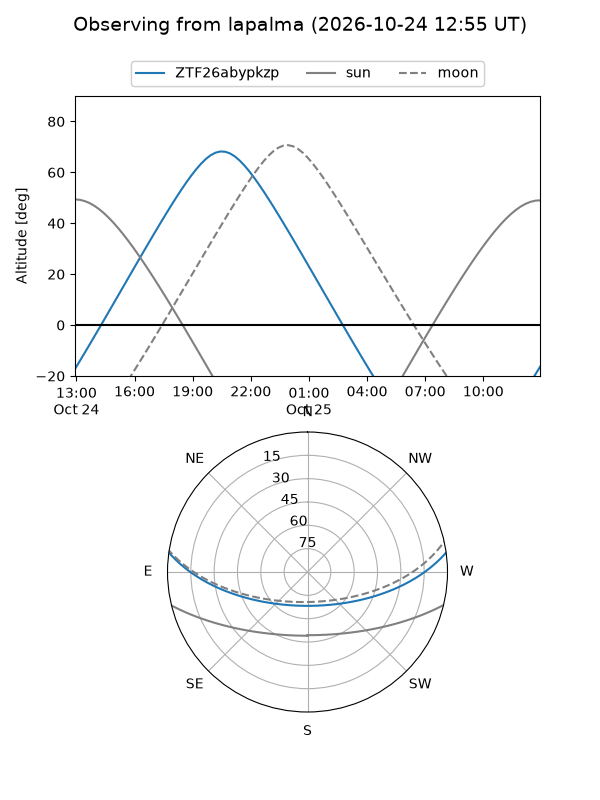
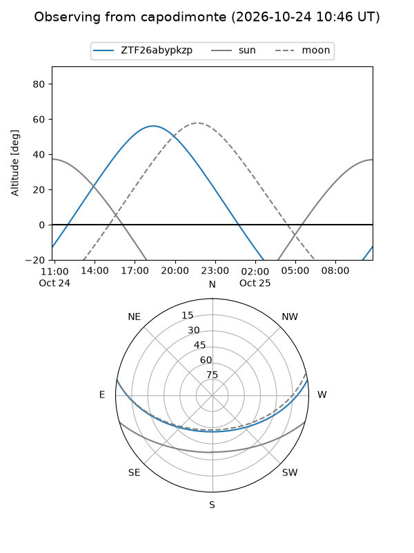
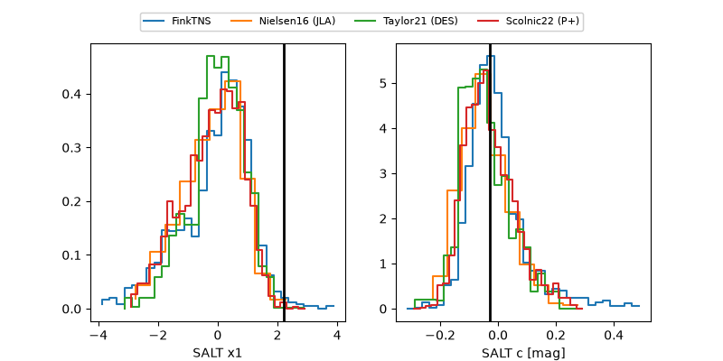

ZTF26abypkzp
Target ZTF26abypkzp at 2026-10-24 14:56
Aliases and brokers:
FINK-ZTF: ztf.fink-portal.org/ZTF26abypkzp
Lasair-ZTF: lasair-ztf.lsst.ac.uk/objects/ZTF26abypkzp
ALeRCE-ZTF: alerce.online/object/ZTF26abypkzp
Direct TNS query: direct search
alt names
ZTF26abypkzp (ztf,fink_ztf)
Coordinates:
equatorial (ra, dec) = 322.6737,+6.87381
equatorial (HMS+DMS) = 21:30:41.69,+06:52:25.72
galactic (l, b) = (60.3963,-30.74313)
Flags:
peak dt: +15.3
Photometry:
last ztfg=20.18, ztfr=20.25
2 ztfg, 1 ztfr detections
Lightcurve

Visibility



Additional plots
